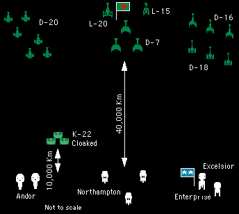
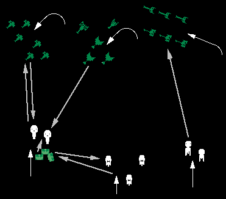
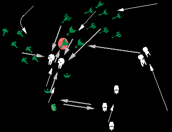
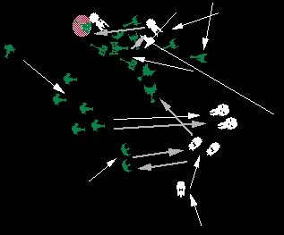
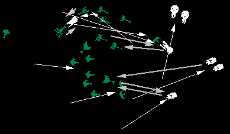
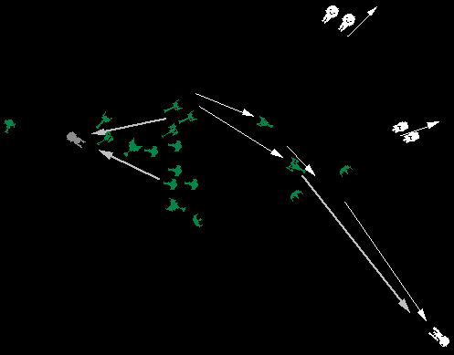

| Name: | The Battle of Farkin |
|---|---|
| Campaign Date: | 2/2504.13 |
| Location: | Farkin System, The Triangle (10.4S, 6.1E) |
| Opponents: |
United Federation of Planets (Star Fleet)
Task Force 24, Vice Admiral K. Kinneson commanding [Ken Buchs, Joy Murphy, David Linnemeier] |
|
Klingon Empire (Klingon Space Navy)
Battle Group Ker'chuck, Admiral Ker'chuck commanding [Art Perlman, Phil Gunther, Scott Smith, David Ternes] |
|
| Play Date: | 22 June 2002 & 27 July 2002 |
| Play Location: | The Keep, Fort Wayne, Indiana |
| Info Available: |
Federation Press Release
Klingon Press Release Bridge Transcript Battle Description Order Of Battle Federation Order Of Battle Klingon Commendations (Klingon) |
The following article appeared in the Star Fleet News and numerous planetary papers following the battle.
|
Minor Battle in The Triangle Star Fleet Command announced that on 2/2504.13 in the Farkin System (The Triangle) an encounter occurred between elements of Star Fleet's Task Force 24 and an unidentified Klingon battle group. Severely outnumbered, Task Force 24 dealt heavy damage to the Klingon force. An enemy cruiser and destroyer were seen to explode under fire, while at least two cruisers were left dead in space. Best estimates indicate that at least two cruisers, two destroyers, and two scouts were also seriously damaged, in addition to moderate damage to three or four other ships. Star Fleet losses were listed as the cruiser Minsk and the frigate Astoria. Other ships sustained moderate damage. Full details of the engagement have been withheld due to security considerations for ongoing operations. |
The following article appeared on the Warrior's Way News Network following the battle.
|
The following is reported to be a transcript of the bridge recording from the USS Hancock prior to the start of the Battle of Farkin as published by the Stellar Inquirer.
| Stardate: | 2/2504.13/0834.3 |
| Location: | Farkin system, The Triangle |
| Unit: | USS Hancock (NCC-2006) |
| Science Station: | "Admiral Kinneson, sir, sensors show unidentified contacts entering the system. The best estimate is eighteen medium and six large sized ships. All have Klingon warp signatures. They appear to be heading for our position." |
| Communications: | "Sir, sir, we are receiving a message from the Klingon commander;" |
| Kinneson: | "Let's here it." |
| From Viewscreen: | "Waa ...Waa ... We can hear the baby Federation warriors cry even at this distance. Although you will never make it to Stoval Kor, one would think that those who call themselves warriors would stand and fight no matter the odds. So, you whining, puking Federation babies; tuck your tails between your legs and run back to your warm cradles. You should not be out here with real men anyway. So says Ker'chuck, son of Ker'ick, of house Sogg." |
| Helm: | "What are your orders, sir?" |
| Kinneson: | "Get me that Klingon son of Sogg on the screen!" |
| Communications: | "The frequency is open sir." |
| Kinneson: | "Greetings Admiral Kerupchuck. The Federation laughs at the petty threats of the so called Klingon warriors. We intend that you will get out of this system, and stay out! Prepare for battle!" |
| Communications: | "They've cut the channel and increased speed, sir." |
|
Description of the Battle of Farkin Introduction The Battle of Farkin was the first major encounter between war fleets in The Triangle War (the battles at Hadalib and Passarra's Dream now are held to have occurred in the "quasi-war" prior to The Triangle War). In this relatively brief engagement, a more numerous Klingon fleet clearly defeated and routed a Federation fleet of larger, more powerful ships. Extremely poor Federation maneuvering turned what probably should have been a hard fought battle into a clear victory for the Klingons. Strategic Background Federation Vice Admiral K. Kinneson, commander of Star Fleet's Triangle sector and commanding officer of Task Force 24, split his fleet into two units. The faster portion, including his flagship battleship, cruisers, and frigates, rushed ahead to the Farkin system, apparently to establish a foothold and clear the system of enemy space forces. His smaller ships followed at their best speed. Farther behind were the troops needed to clear the system of its Klingon conquerors. No one, including Kinneson, has yet to explain the logic of this deployment. The arrival of the heavy ships at Farkin gave the Klingons a clear and early indication of where he was striking. However, without troop transports, the Star Fleet ships were only able to run off the small Klingon garrison. Additionally, without his lighter units, Kinneson's fleet was, as happened, in danger of being overwhelmed by a force of smaller but more numerous enemy ships. Klingon Admiral Ker'chuck, son of Ker'ick of house Sogg took his battle fleet from Klingon Starbase 1 to the Rockhaven system at the start of The Triangle War. His intention was to add what appeared to be a relatively easy conquest to the systems in The Triangle under Klingon control. Three days after reaching the system and deploying his troops he received information that Star Fleet forces had entered the Flood and Farkin systems. Afflicted as much by simple lust for a fight as by sound strategic logic, Ker'chuck immediately embarked his troops and headed for Farkin. At this time, and in a classic Klingon manner, he informed sector command and the other fleet commanders of his intentions.
Battle Preparations Federation Admiral Kinneson, upon hearing that a Klingon force was approaching the Farkin system, immediately ordered his fleet to prepare for battle, and headed out to meet the enemy. He is reported to have commented on the disparity in numbers, but decided that the superior size and technology of his own ships should be sufficient to give the Klingons a severe beating. Kinneson's battle plan was to use the Excelsior and Minsk on the right flank, and the Mervina and Tuscumbia on the left flank to encircle the Klingons, while the Astoria, Tuscaloosa, and Omaha supported from the center. Klingons  Ker'chuck sought a way to bring his three cloakable Birds of Prey into the fight while cloaked, but realized that their extremely limited speed while under cloak would prevent them from fighting with the fleet in a normal manner. He therefore decided upon a ruse. When the Federation fleet came after him, he would turn away. He would run before the enemy, but at a speed slow enough to insure he was caught fairly quickly. The scouts would trail the fleet by a short distance, and just before the enemy came within firing range, they would cloak and let themselves be overrun. Knowing Star Fleet's love of enveloping maneuvers, Ker'chuck planned to try to be prepared. As soon as the scouts and Federation were in the expected positions, the battle fleet would turn to port 120°. The right flank (six D-20 Death Rite class cruisers) were to attempt to outflank the enemy's left flank. The center would shift to the right, to cooperate with the right flank against the enemy's left flank. The Klingon left flank (three D-16 Swiftwind and three D-18 Gull class destroyers) was to interpose itself between the Star Fleet center and right flank to protect the heavy ships in the center. This force was considered to be expendable, if necessary. Finally, the scouts were to attempt to attack any Federation ships from the rear as they rushed into battle (the squadron commander reportedly swore upon his family's honor to Ker'chuck that they would put a torpedo into a Star Fleet battleship). Finally, to help insure that the Star Fleet force would stay and fight him, Ker'chuck sent an open message to the Federation commander as a taunt;
Unlike most of Ker'chuck's blood-wine induced battle plans, this one actually worked! The Battle Opening Moves  Both fleets began moving as planned from their initial deployments. The Star Fleet ships generally moved forward, toward their opposites in the Klingon fleet. Noting that the Klingon force was short by three ships, the commander of the frigates began scanning for cloaked ships. One scout was detected and attacked. The Klingon battle fleet actually did what was planned! The D-20s turned, moved to the side, and engaged the left flank Andor class cruser (Tuscumbia). The center turned, advanced on the Federation left flank, and engaged the other Andor (Minerva). The destroyers on the left changed their course, but, having listened to Ker'chuck's constant ranting about "those damnable Andor missile cruisers", turned to add their firepower to that already aimed at the Andors (thus failing to slow the Federation right flank's advance). Despite having a ship detected, the scouts still succeeded in placing one torpedo into the unshielded rear of the cruiser Minerva. During this time, heavy fire from the Tuscumbia and Minerva crippled the cruiser Swinging Sword (D-20 Death Rite), leaving it dead in space without a crew. Fire from the Hancock (Excelsior) and Minsk (Enterprise) heavily damaged the destroyer Eagle (D-18), effectively eliminating its combat capability. Klingon return fire was relatively ineffective due to the range, and the Klingon force's general lack of photon torpedo armaments. It Begins To Get Serious On the Federation left flank, the Tuscumbia and Minerva charged forward. Heartened by the effective destruction of a Klingon cruiser, they, along with the Hancock and Minsk, turned their attentions to the cruisers from the Klingon center group. In a short time, the Bringer of Regrets (D-7) was overwhelmed and exploded. The Swinging Sword (D-7) received enough damage to render it non-operational. Seconds later, the Painbringer was also damaged by Star Fleet fire.  Meanwhile, the Federation frigates continued to look toward the Klingon scouts. Their combined firepower severely damaged the Star of Destruction. Except for one Bird of Prey, the entire Klingon battle force concentrated its fire on the two Andor class cruisers. Both took large amounts of damage, although they remained operational. Most notable about this, was that the D-20 squadrons, according to orders, achieved a flanking position on the onrushing Andors, and delivered most of their attacks into the Tuscumbia's unshielded rear section. The Federation Retreats And Charges The Andors, having taking heavy damage, were ordered to move rapidly away from their attackers. This they did this by moving across the Federation center at high speed. The suddenness and speed of the maneuver left the Klingon forces unable to effectively pursue, although one scout did provide a minor amount of damage as a parting shot.  At the same time, the Hancock and Minsk finally caught up with the Klingon left flank. As they did, both locked onto the Eagle, again. Realizing that it was almost certainly dead, the Eagle led the Federation ships as deep into the Klingon fleet as possible. A few moments later, the Eagle exploded under the combined fire of the two large Federations warships. As the Andors crossed the Federation center, the frigates Tuscaloosa, Omaha, and Astoria turned to follow. The turn caused a third of their phasers, and all of their photon torpedoes to point away from the enemy. Given this orientation, none were able to effectively contribute to the rest of the battle. As the Minsk raced after the Eagle, it conveniently passed immediately in front of the Glorious Wind. The Glorious Wind and Smiling Death locked onto it, and proceeded to hit it, causing serious damage. The Death Rites continued their pursuit of the Andors, although the increasing range limited the damage they were able to inflict. The destroyers followed the Excelsior, but, again, range reduced their impact. Two of the scouts continued to engage the frigate Astoria. However, the Searcher for Secrets fulfilled his squadron commander's promise to Admiral Ker'chuck, by chasing down the Excelsior, circling in front of it, and hitting it with a photon torpedo and disruptors through its unshielded front. The Rout Begins  Apparently, the Hancock finally realized that it was almost alone in the middle of the Klingon battle fleet. Reversing its course, it shot at high speed back toward the rest of the Federation force. Due to this rapid movement, it quickly pulled away from its target, one of the D-18s, thus greatly reducing the damage it inflicted. The Andors and two of the frigates were pulling away from the battle. The Astoria, lagging behind, continued to engage the damaged Painbringer. Meanwhile, the Minsk was in serious trouble. Damaged by the previous attack, its power was greatly reduced. Hounded by the Klingon's two most powerful battle units, it succeeded in executing one of the poorest maneuvers ever seen in Star Fleet combat. It prepared to fire on the Smiling Death. However, when the Glorious Wind moved up immediately astern, the Minsk turned to face it. This allowed the Smiling Death to move behind the Minsk. The result was that both Klingon ships attacked from a range of 10,000 kilometers, and the Minsk, firing on the Glorious Wind without a lock-on missed with its entire armament. For the Klingons, the Glorious Wind and Smiling Death again smashed the Minsk. The D-20s shifted their attentions to the Astoria, and were aided by the Painbringer and two of the scouts. The destroyers fired on the Excelsior. The Searcher for Secrets, having planned to turn its attention to the Astoria, was given an unexpected gift when the Hancock rushed by. At a range of less than 5,000 kilometers, two disruptors and a photon torpedo ripped into the Excelsior's engines from behind.
The Beginning Of The End
The Federaton fleet was now in full rout. The Hancock was racing away from the battle. The Andors and two frigates had effectively left the battle. The Minsk was heavily damaged and unable to make any menaingful speed or fire weaponry. The Astoria, with only light damage was trailing the retreat, although most of its weapons could not be brought to bear on the enemy. With so many Star Fleet ships running, the Klingon fleet had only two effective targets, the Astoria and the Minsk. The result of almost the entire fleet firing on the Astoria was a large and spectacular explosion. At the same time, two destroyers were detailed to deal with the now crippled Minsk. Lacking the firepower to deal with the large ship, they only did a limited amount of additional damage. The End  The battle ended anticlimactically. All of the Federation ships were either out of range or unable to fire. Unable to keep up with the retreating enemy, most of the Klingon fleet turned its attentions to the Minsk. After a few, limited, shots, the target went dead; powerless and without crew. As the Hancock ran, the Glorious Wind and Smiling Death gave chase. The Hancock was barely able to keep ahead by putting all of its power into its engines. The Smiling Death was able to keep pace, and lightly arm its forward disruptors. The Glorious Wind, by putting all power to its engines, was very slowly overtaking the Hancock. After taking a slight bit of additional damage, the Hancock was able to perform sufficient repairs to its warp engines to increase its speed above that of the Smiling Death. Admiral Ker'chuck was unwilling to have the smaller Glorious Wind continue the chase by itself, and so called off the pursuit and the battle taunting the Federation as it ran;
Thus ended the Battle of Farkin, as Admiral Ker'chuck slipped, smiling, into another blood-wine induced coma. It is assumed that Admiral Kinneson was somewhat less pleased with the results. Analysis Klingons The Klingons had a plan, and overall, they followed it, and it worked. The D-20s of the right flank succeeded in enveloping the Federation left flank, and effectively ran that force off. The Klingon center moved against the Federation right flank, and formed part of the pincer against it. The destroyers of the left flank did not follow the plan. Instead of holding back the Federation right flank, they rushed to attack the enemy left flank. Had the Federation right flank been better handled, this could have been a disaster, but instead, left the destroyers well positioned to go after the Excelsior. The scouts, although discovered early in the fight, were able to execute a number of attacks, and clearly distracted the Federation center for an extended period of time, thus keeping the frigates out of the fight. Federation The Star Fleet force seems to have done almost nothing right throughout the battle. Their overall plan appears to have been a "mock envelopment". That is, a series of movements which look like an envelopment, but which actually failed to execute such a maneuver. At the start, the frigates in the center were ordered to "support" the other units. Unfortunately, these frigates are armed with short range photon torpedoes, and so are not particularly good at "long range support" work. The frigates then spent the early part of the battle attacking the cloaked scouts on the left flank. Once the nature of the enemy ships (Birds of Prey) was known, they should have been ignored, and the Federation ships should have simply moved away from them. Later, as part of the rout, the lead frigates turned directly away from the enemy, thus removing most of their armament from the fight. The Astoria was lost due to simple poor maneuvering. Once it was decided to withdraw, she should have turned away from the fight and run. Instead, she attempted to follow the other frigates across the front of the whole Klingon fleet. The manevuering of the Andor class cruisers was equally poor. Although always maintaining a faster speed than most of the Klingon force, they were easily outflanked by the Klingon right flank as they flew directly into the center of the Klingon force. Only their high speed withdrawal prevented the destruction which they invited upon themselves. Of greatest note is the running disaster which was the Star Fleet right flank. Although easily capable of outmaneuvering the Klingons, neither the Hancock nor the Minsk made any effort to do so. Both ships flew directly into the back of the Klingon fleet rather than engaging from outside of the enemy formation. At one point the Minsk flew close in front of the Klingons' battle cruiser, apparently without paying any attention to that ship's capabilities for dealing out damage. Even more amazing, is that the Minsk was attacked in a combined pincer by the Klingons' battleship and battle cruiser from ahead and astern simultantously, not once, but twice! The only thing which kept the Hancock from taking more damage was that the Klingons' large ships were busy attacking the Minsk instead of the battleship. Conclusion Amazingly, the Klingons did nothing really wrong in the battle, and did a number of things right. What changed the battle from a hard fought, highly destructive engagement into a rout was the numerous and repeated errors on the part of the Star Fleet force. In retrospect, very little positive can be found in the way that force executed its part of the battle. Star Fleet High Command may want to reconsider its selection for a task force commander. |
Battle of Farkin - Order of Battle
United Federation of Planets / Star Fleet
Task Force 24 - Vice Admiral K. Kinneson
| Ship Name | Class Name | Type | Class | Players |
|---|---|---|---|---|
| Hancock | Excelsior Mk I | BB | XIV | Ken Buchs |
| Minsk | Enterprise Mk I | CA | XI | Ken Buchs |
| Mervina | Andor Mk IV | CA | X | Ken Buchs |
| Tuscumbia | Andor Mk IV | CA | X | Ken Buchs |
| Astoria | Northampton Mk I | FR | X | Joy Murphy / David Linnemeier * |
| Tuscaloosa | Northampton Mk III | FR | X | Joy Murphy / David Linnemeier * |
| Omaha | Northampton Mk III | FR | X | Joy Murphy / David Linnemeier * |
| * | Note: Joy Murphy commanded in the first game session. David Linnemeier commanded in the second game session. | |||
Klingon Empire / Klingon Space Navy
Battle Group Ker'chuck - Admiral Ker'chuck son of Ker'ick of House Sogg
| Ship Name | Class Name | Type | Class | Player |
|---|---|---|---|---|
| Smiling Death | L-20A Fast Battleship | BB | X | Art Perlman |
| Glorious Wind | L-15A Glorious Wind | BC | IX | Art Perlman |
| M'ragger's Squadron | Art Perlman | |||
| Bringer of Regets | D-7T Bringer of Regrets | CA | IX | |
| Swinging Sword | D-7M Bringer of Destruction | CA | IX | |
| Painbringer | D-7A Painbringer | CA | VIII | |
| L'moran's Squadron | Phil Gunther | |||
| Empty Crypt | D-20D Death Rite | CA | VII | |
| Funeral Maker | D-20D Death Rite | CA | VII | |
| Undertaker | D-20D Death Rite | CA | VII | |
| Nomar's Squadron | Phil Gunther | |||
| Happy Hearse | D-20E Death Rite | CA | VII | |
| Deep Grave | D-20C Death Rite | CA | VII | |
| Stone Crypt | D-20C Death Rite | CA | VII | |
| Krager's Squadron | Scott Smith | |||
| Raven | D-18B Gull | DD | IX | |
| Hawk | D-18B Gull | DD | IX | |
| Eagle | D-18B Gull | DD | IX | |
| Kidder's Squadron | Scott Smith | |||
| Lightening Storm | D-16C Swiftwind | DD | VI | |
| Hailstorm | D-16C Swiftwind | DD | VI | |
| Sandstorm | D-16C Swiftwind | DD | VI | |
| Ritemarr's Squadron | David Ternes | |||
| Star of Destruction | K-22B Bird of Prey | SC | V | |
| Searcher for Secrets | K-22B Bird of Prey | SC | V | |
| Bird of Prey | K-22B Bird of Prey | SC | V | |
| Karmul's Support Squadron | * | |||
| Healer of Wounds | S-5A Healer | AR | IV | |
| Fixer of Booboos | S-5A Healer | AR | IV | |
| Welding Rod | S-5A Healer | AR | IV | |
| Attached Assault Unit | * | |||
| Death Hauler | T-3A Mover | APA | VI | |
| * |
Note: Karmul's Support Squadron and the Attached Assault Unit were
positioned 400,000 kilimeters ahead of the main force at the start of the battle, and did not participate in the fight. |
|||
Commendations (Klingon)
| Date: | 2/2404.13 |
| To: | High Command, Klingon Space Navy |
| From: | Ker'chuck, son of Ker'ick, House Sogg, Commander Battle Group Ker'chuck |
| Subject: | Battle Commendations |
| While the effort of all the personnel in my battle group were in every way those of true warriors, I wish to bring the specific actions of the following four officers at the Battle of Farkin to the attention of the High Command. | |
| 1. | Captain Nomar of the Happy Hearse and leader of Nomar's Cruiser Squadron. Along with L'moran's Squadron, Nomar led the fleet in the envelopment of the Star Fleet left flank. His brilliant maneuvering enabled his squadron to achieve a position behind a faster foe and thereby to inflict damage disproportionate to the offensive capabilities of this ships. Given his rank and experience, Nomar should be taken under consideration for promotion to Admiral. |
| 2. | Captain L'moran of the Empty Crypt and leader of L'moran's Cruiser Squadron. Following Nomar's Squadron, L'moran led his force into the rear of the Star Fleet left flank. His ships never wavered, and pushed across the enemy's rear to rout the enemy facing his squadron. A star of bravery is warrented. |
| 3. | Captain Ritemarr of the Star of Destruction and leader of Ritemarr's Scout Squadron. Ritemarr's ships bravely waited for the Federation fleet to overrun their position, and decloaked to deliver a surprise attack into the rear of the enemy's left flank. Despite their small size, his scouts effectively kept three frigates in the Federation center occupied for the first half of the battle. Ritemarr should be considered for command of a more powerful squadron. |
| 4. | Captain Gorath of the Searcher For Secrets. Gorath, acted as part of Ritemarr's Scout Squadron to keep the Federation center busy for much of the battle. However, when opportunity presented itself, his ship raced after the Federation flagship, caught it, circled in front of it, and attacked it at extremely close range. Moments later, as the enemy battleship attempted to race away from the encounter, Gorath again moved into a close attack position and hit for more notable damage. Captain Gorath is recommended for advancement to squadron leader when his current squadron leader (Captain Ritemarr) is advanced. |